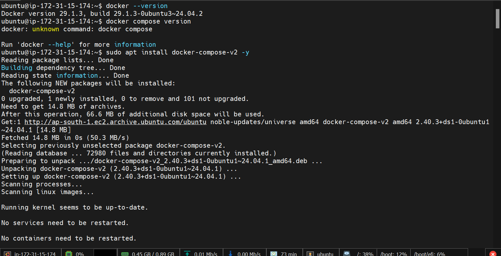
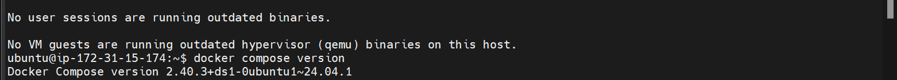
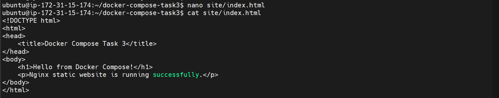
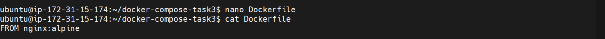
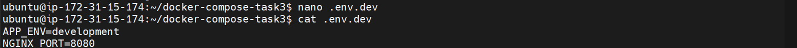

Use Docker Compose to run an Nginx static website with separate development and production environments.
Docker, Docker Compose, Nginx and Watchtower
docker-compose-task3/
├── Dockerfile
├── docker-compose.yml
├── .env.dev
├── .env.prod
└── site/
└── index.html
Development:
APP_ENV=development
NGINX_PORT=8080
Production:
APP_ENV=production
NGINX_PORT=8081
docker compose --env-file .env.dev up -d
docker compose --env-file .env.prod up -d
curl http://localhost:8080
curl http://localhost:8081
Hello from Docker Compose!
Nginx static website is running successfully.
The initial Watchtower image produced a Docker API compatibility error because the client version was too old. The setup was corrected by switching to the Watchtower image used in the final task setup.
Watchtower 1.21.2 using Docker API v1.52
The Nginx static website was successfully run using Docker Compose in both development and production environments.
Some screenshots from the task execution are shown below.




